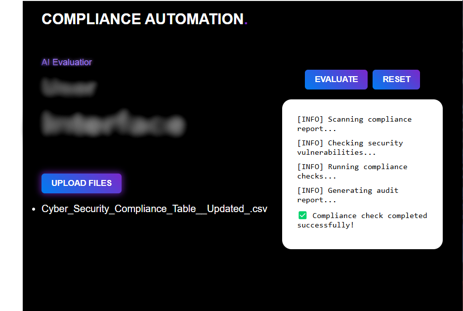

Overview
This tool uses an LLM to compare company cybersecurity controls against NCA compliance requirements and returns standardized assessment results.
Features
- Automated compliance assessment via AI interaction
- Reads requirements & controls from CSV files
- Exports assessment results to Excel
- Interactive UI for file loading & report generation
- Real‑time analysis using the Ollama API
Tech Stack
| Component | Tool / Library | Purpose |
|---|---|---|
| Language | Python | Core application logic |
| Data Handling | Pandas | CSV & Excel I/O |
| AI Integration | Ollama API | LLM‑based compliance analysis |
| UI | HTML / JavaScript | Interactive front‑end |
| Reporting | Pandas to_excel | Generate Excel reports |
How to Run
- Install Python dependencies:
pip install pandas ollama - Launch the UI and load your control & requirement CSV files
- Click ‘Evaluate’ to trigger AI assessment
- Download the Excel report